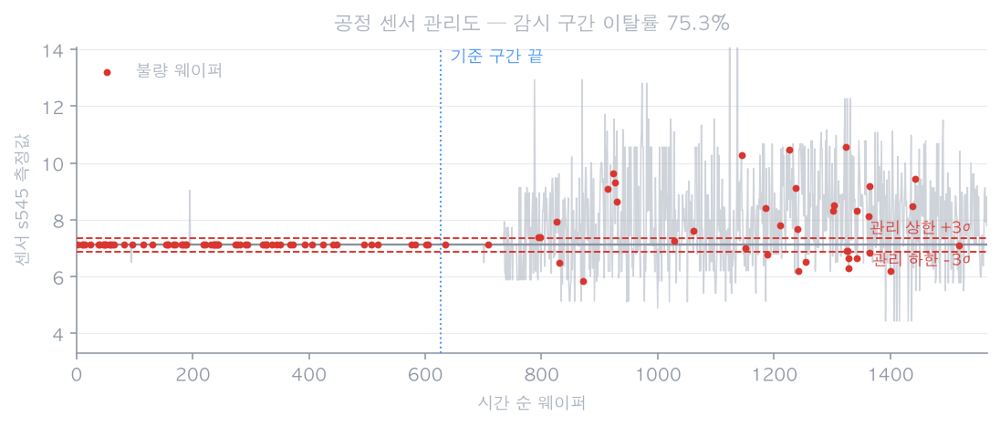
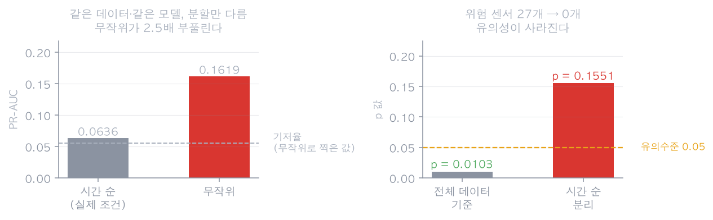
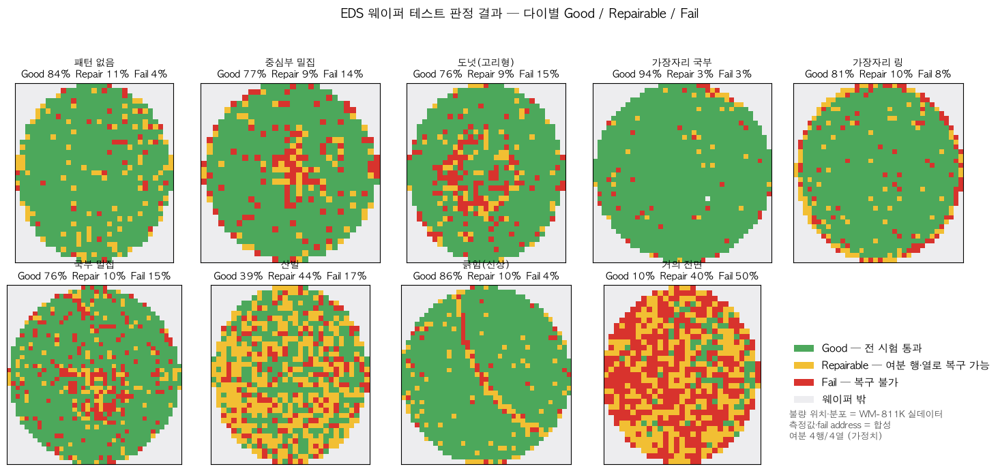
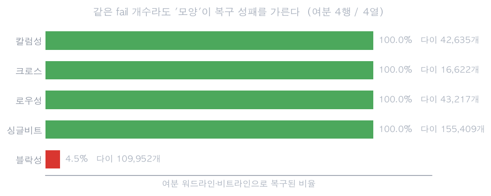

한눈에 보기
읽는 분이 이 분야를 모른다고 가정하고 씁니다. 반도체 칩은 둥근 원판(웨이퍼) 위에 수백 개가 한꺼번에 만들어집니다. 다 만든 뒤 웨이퍼 테스트라는 전기 검사를 거치는데, 바늘을 칩에 대고 전압을 넣어 정해진 출력이 나오는지 봅니다. 여기서 떨어진 칩은 버리거나, 미리 넣어둔 여분 배선으로 고쳐 씁니다. 이 프로젝트는 그 판정과 원인 추적의 흐름을 공개 데이터로 재현한 것입니다.
문제와 발견
시작은 단순한 질문이었습니다. 공정 장비가 남긴 기록만 보고 그 웨이퍼가 불합격할지 미리 알 수 있을까. 실제 라인에서 89일간 기록된 공개 데이터(SECOM)로 확인했습니다. 웨이퍼 1,567장 각각에 센서 590개의 측정값과 합격·불합격 결과가 붙어 있는 자료입니다.
먼저 눈에 띈 것은 불량률 자체가 흔들린다는 사실이었습니다. 7월 22.22%, 8월 9.19%, 9월 2.88%, 10월 6.13%. 같은 라인인데 달마다 8배 가까이 달랐습니다. 이 사실 하나가 이후 모든 검증 방식을 정했습니다. 데이터를 무작위로 섞어 나누면 나중 기간의 웨이퍼가 앞 기간을 판단하는 데 섞여 들어가기 때문입니다.

센서값을 평소 범위(앞 40% 구간의 평균 ±3σ)와 대조하자 이상이 실제로 보였습니다. 442개 센서 중 28개는 한번 벗어난 뒤 돌아오지 않았고(지속적 이동), 52개는 잠깐 튀었다가 제자리로 복귀했습니다. 둘은 현장 대응이 다릅니다. 전자는 보정이나 정비 대상이고, 후자는 그 기간에 만든 웨이퍼를 따로 확인할 대상입니다. 예를 들어 어느 센서는 관리 범위를 벗어나는 빈도가 전반 3.72%에서 후반 87.10%까지 늘었습니다.
공정이 흔들린 기록은 이렇게 뚜렷한데, 정작 그 센서값으로 합격·불합격을 맞히는 것은 되지 않았습니다. 개별 센서 중 합격군과 불합격군을 뚜렷이 갈라놓는 것이 하나도 없었습니다(효과크기 0.8 이상 = 0개). 이 사실이 이후 가설 검증의 출발점이 됐습니다.
가설과 검증
시간 순으로 학습·평가를 나누자 예측력이 거의 사라졌습니다(ROC-AUC 0.551). 불량 가능성이 높은 순으로 상위 5%를 재검사한다고 가정해도 실제 불량 검출률은 0%였습니다. 특징 선택, 정규화 강도 조정, 최근 데이터만 학습 등 7가지를 시도했지만 기저율의 1.27배를 넘지 못했습니다. 튜닝을 안 해서가 아니라, 해도 오르지 않았습니다.
전체 데이터로 보면 그럴듯했습니다. 여러 센서가 동시에 관리 범위를 벗어난 웨이퍼 74장의 불량률은 14.86%로, 나머지(6.23%)의 2.39배였고 통계 검정도 통과했습니다(p = 0.0078). 그런데 위험도를 앞 기간에서만 학습하고 뒤 기간에서 평가하자 위험 센서가 27개에서 0개로 사라지고 유의성도 없어졌습니다(p = 0.1551). 같은 데이터로 기준을 정하고 같은 데이터로 검증한 것이 문제였습니다.
실제 양산 웨이퍼 지도 데이터로 확인했습니다. 이웃한 칩이 모두 정상일 때 그 칩의 불량률은 9.01%인데, 이웃 4개가 불량이면 87.12%로 뛰었습니다. 약 9.7배입니다. 공간적으로 뭉친다는 사실 자체는 실측으로 확인됐습니다. 다만 그 뭉침이 칩 안쪽에서 어떤 형태의 고장으로 나타나는지는 공개 데이터가 없어 가정으로 채워야 했습니다.
칩 내부 고장 위치가 한 줄로 늘어서면 여분 배선 하나로 그 줄을 통째로 대체할 수 있어 100% 복구됩니다. 반면 한 구역에 덩어리로 뭉치면 여분을 모두 써도 4.48%만 복구됩니다. 가정값을 바꿔가며 확인해도 이 순서는 뒤집히지 않았습니다.
"합성값이 실측 판정을 뒤집으면 저장하지 말고 중단하라"는 조건을 넣자, 초기 구현에서 정상 칩 275,159개가 불량으로 뒤집힌 것이 걸렸습니다. 값 생성에 쓴 식의 꼬리가 규격을 벗어난 것이 원인이었고, 분포를 규격 안에 가두되 공간적 유사성은 유지하도록 고쳤습니다. 수정 뒤 불일치 0을 확인했습니다.

처음에는 웨이퍼 테스트 흐름 안에 결함 사진 분석을 넣었습니다. 확인해 보니 웨이퍼 테스트는 전압을 넣어 출력을 보는 전기 검사이고, 사진으로 결함을 들여다보는 것은 걸러진 칩을 나중에 뜯어보는 별도 단계였습니다. 완성한 사진 분석 모듈을 버리지 않고 그 단계로 위치를 옮긴 뒤, 웨이퍼 테스트 쪽은 전압·전류·온도 검사와 복구 판정으로 전면 교체했습니다.
| 처음 설계 | 고친 뒤 | |
|---|---|---|
| 웨이퍼 테스트 단계 | 결함 사진 분석 | 전압·전류·리텐션 전기 검사 |
| 합불 기준 | 사진 속 결함 유무 | 측정값과 규격 대조 |
| 사진 분석의 위치 | 같은 흐름 안 | 걸러진 칩의 원인 분석 단계 |
| 검사 규격값 | 임의로 정한 값 | 공개 데이터시트 실제 값 |
구현
웨이퍼 위 어느 칩이 불량인지는 실측 데이터가 정합니다. 다만 그 칩이 어느 검사에서 어떤 값으로 걸렸는지는 공개된 자료가 없어 채워 넣어야 했습니다. 이 경계를 코드에서 분리하고, 채워 넣은 값이 실측 판정을 바꾸면 결과를 저장하지 않고 멈추도록 만들었습니다.
| 어느 칩이 불량인가 · 웨이퍼 위 분포 | 실측 (양산 라인 웨이퍼 지도) |
| 공정 센서 측정값 · 합불 결과 | 실측 (라인 89일 기록) |
| 결함 사진과 전문가 표시 영역 | 실측 (SEM 이미지 4,591장) |
| 검사 규격값 | 공개 데이터시트 실제 값 |
| 검사별 측정값 · 칩 내부 고장 위치 | 가정으로 채움 (공개 자료 없음) |
검사는 실제 순서를 따라 여섯 단계로 구성했습니다. 배선이 끊기거나 붙었는지 보는 검사, 전류가 규격 안인지 보는 검사, 정해진 값을 쓰고 다시 읽어 맞는지 보는 검사, 그리고 값을 기억하는 시간을 재는 검사입니다. 고온 조건에서도 반복합니다. 상온에서 겨우 통과하던 칩이 여기서 떨어지기 때문입니다.
떨어진 칩은 고칠 수 있는지를 따집니다. 칩에는 여분 배선이 미리 들어 있어서, 고장 난 줄을 통째로 여분으로 갈아끼울 수 있습니다. 다만 여분 개수가 정해져 있어 고장이 어떤 모양으로 퍼져 있느냐에 따라 성패가 갈립니다.

화면에서 칩 하나를 누르면 그 칩의 측정값과 규격, 그리고 왜 그 등급이 됐는지가 문장으로 나옵니다. 복구 가능하거나 불가한 칩을 누르면 칩 안쪽 고장 위치 분포가 펼쳐지고, 여분 배선이 어디에 배정됐는지, 무엇이 덮이지 않았는지가 그림으로 표시됩니다.
결과
| 전수 판정한 칩 | 2,128,718개 (웨이퍼 2,000장) |
| 합격 | 1,638,172개 · 76.96 % |
| 복구 가능 | 262,809개 · 12.35 % |
| 복구 불가 | 227,737개 · 10.70 % |
| 불량 칩 중 복구 가능 비율 | 53.6 % (490,546개 중) |
| 실측 판정과 불일치 | 0건 (정상 → 합격 1,638,172건 / 불량 → 복구·불가 490,546건) |

가장 분명하게 남은 결과는 이것입니다. 고장 개수가 같아도 모양이 다르면 결과가 갈립니다. 한 줄로 늘어선 고장은 여분 배선 하나로 정리되지만, 덩어리로 뭉친 고장은 여분을 다 써도 남습니다. 실제 현장이라면 여분을 늘리는 것보다 덩어리 형태의 불량 자체를 줄이는 편이 효과가 크다는 뜻이 됩니다.
이 결론이 가정에 얼마나 기대는지도 확인했습니다. 여분 개수를 2개에서 8개까지 바꾸고, 복구 불가 비율과 고장 모양 분포를 바꿔가며 전체를 다시 돌렸습니다. 합격 비율은 어떤 조건에서도 고정이었습니다. 합격과 불량의 경계는 실측이 정하기 때문입니다. 움직인 것은 가정이 정하는 복구 가능·불가 배분뿐이었고, 그 폭은 아래와 같습니다.
| 여분 배선 개수 2 → 8 | 복구 가능 비율 11.12 % → 16.00 % (폭 4.88 %p) |
| 복구 불가 비율 가정 0.10 → 0.60 | 복구 불가 10.48 % → 19.68 % (폭 9.20 %p) |
| 고장 모양 분포 시나리오 | 복구 가능 8.57 % → 19.63 % (폭 11.06 %p) |
공정 센서 쪽은 앞서 적은 대로 예측이 성립하지 않았습니다. 다만 검증 과정에서 얻은 것이 있습니다. 같은 데이터에 같은 모델을 쓰고 나누는 방식만 바꿨을 때 성능 지표가 2.5배 부풀려졌습니다. 센서 442개를 각각 검정하면 관계가 없어도 유의수준 5%에서 약 12개가 우연히 걸리므로 보정을 적용했고, 보정 전 37개이던 위험 센서는 27개로 줄었습니다. 그마저도 시간 순으로 나누자 0개가 됐습니다.
결함 사진 분석은 전문가가 표시한 영역과 모델이 찾은 영역의 일치도가 0.939였습니다(1에 가까울수록 일치). 결함이 없는 사진 34장에서는 잘못 찾아낸 부분이 한 곳도 없었습니다. 다만 이 데이터에는 웨이퍼나 촬영 배치를 구분할 정보가 없어 같은 웨이퍼의 이웃 영역이 학습과 평가에 함께 들어갔을 수 있습니다. 이 수치를 일반화 성능이라 부르지 않습니다.
한계
증명한 것. 불량이 웨이퍼 위에서 공간적으로 뭉친다는 사실(이웃이 정상일 때 9.01% → 이웃 4개가 불량일 때 87.12%). 고장 모양에 따라 복구 성패가 갈린다는 사실 (한 줄 100% vs 덩어리 4.48%, 가정을 바꿔도 순서 유지). 검증 조건을 코드에 심으면 합성값이 실측 판정을 훼손하는 것을 잡아낼 수 있다는 사실(275,159건 검출). 나누는 방식이 결론을 바꾼다는 사실(같은 데이터에서 2.5배 차이).
- 공정 센서로 불량을 예측하지 못했습니다. 시간 순으로 검증하면 예측력이 거의 사라졌고, 7가지 개선 시도로도 오르지 않았습니다. 이 데이터 규모로는 확인되지 않는다는 것까지가 결론입니다.
- 이상 신호를 원인 장비까지 추적하지 못했습니다. 공개 데이터의 센서는 번호로만 표시되어 있습니다. 어느 센서가 언제부터 얼마나 자주 벗어났는지는 찾았지만, 그것이 어느 장비의 무슨 물리량인지 알 수 없어 조치로 연결되지 않습니다. 정비 이력도 없어 센서 자체가 낡은 것인지 공정이 변한 것인지 구분할 수 없습니다.
- 칩 내부 고장 위치는 실측이 아닙니다. 셀 단위 고장 주소는 공개된 자료가 없어 물리적으로 타당한 형태로 채워 넣었습니다. 복구 판정 논리는 실제 방식을 따랐지만, 복구 가능 비율의 절대값을 인용해서는 안 됩니다. 가장 민감한 가정(고장 모양 분포)에서 11.06%p까지 움직입니다.
- 칩 단면 사진 분석은 시도하지 못했습니다. 현장에서는 불량 칩을 잘라 단면을 보고 어느 층에서 문제가 생겼는지 확인합니다. 공개 자료를 찾아봤지만 쓸 수 있는 것이 없었습니다(가장 가까운 공개본이 15장). 소자 구조가 그대로 드러나는 자료라 공개되지 않습니다.
- 결함의 원인 공정을 자동으로 판정하지 않았습니다. 원인이 표시된 공개 데이터가 없기 때문입니다. 대신 결함의 형태를 측정해 논문 근거와 함께 후보만 제시하고, 확정은 사람이 하도록 두었습니다. 판정 기록을 쌓는 구조까지만 만들었습니다.
실제 공정 데이터에는 센서마다 물리량과 장비, 정비 이력이 연결되어 있습니다. 위 한계의 상당 부분은 그 정보가 있으면 해소됩니다. 이상 신호를 원인 장비까지 좁히고, 센서 노후와 공정 변화를 이력으로 구분하는 데까지 이어가고 싶습니다.